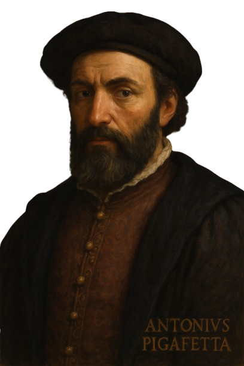
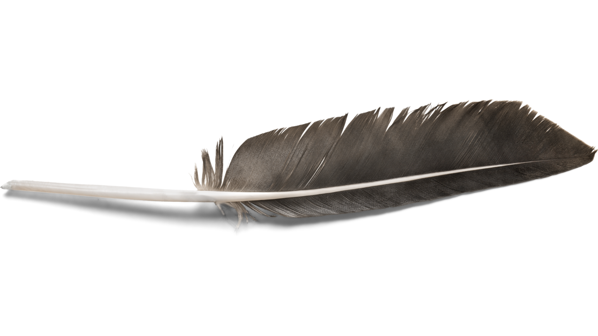
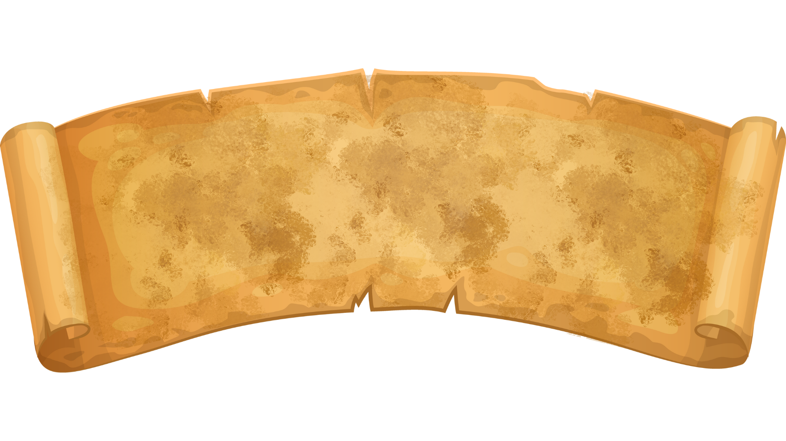
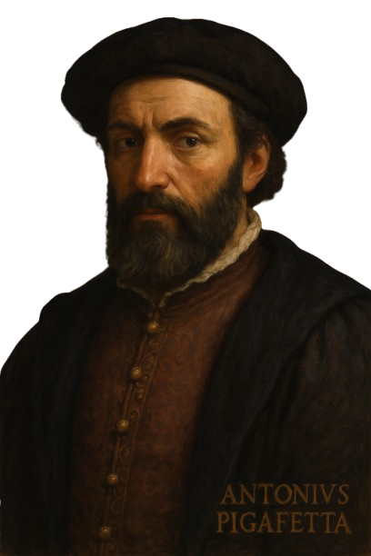
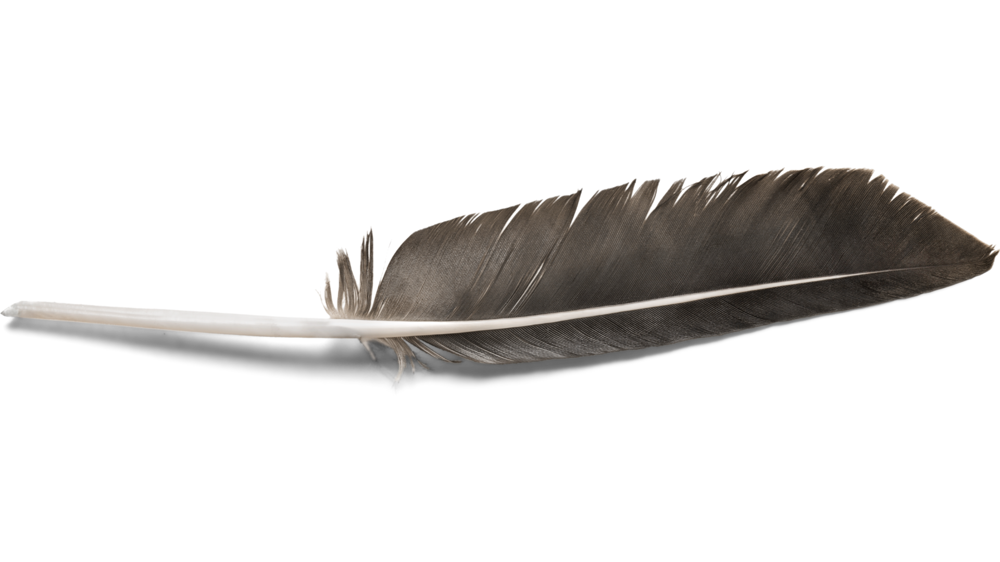
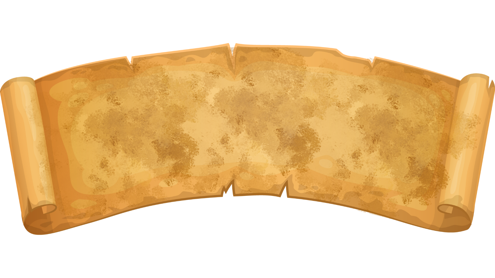
In the Nobleman's Eye
Antonio Pigafetta's Account of the First Mass in the Philippines
 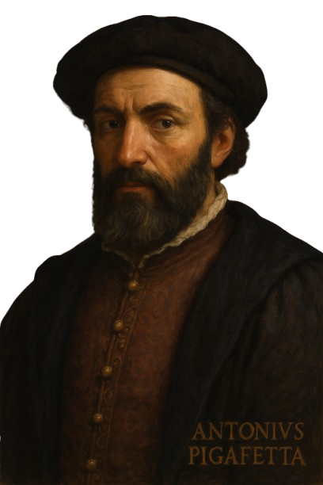
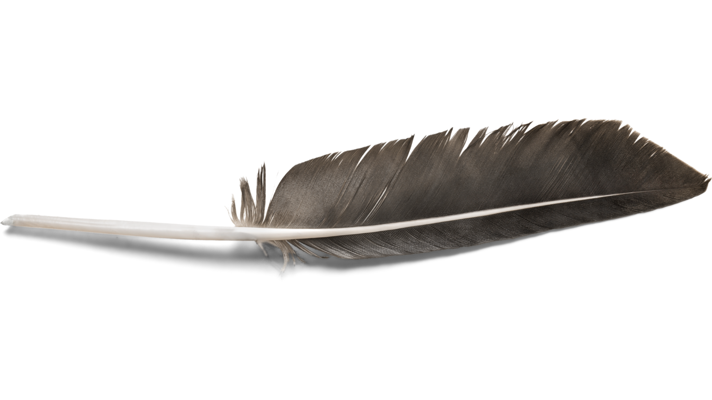
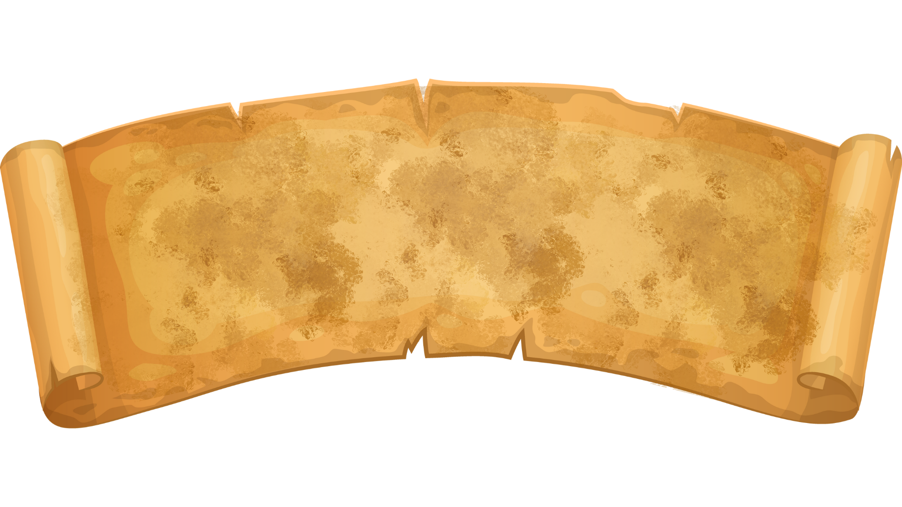
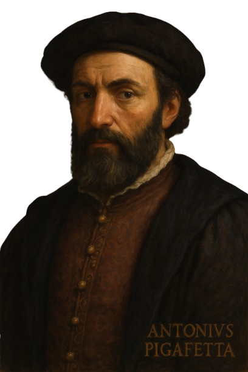
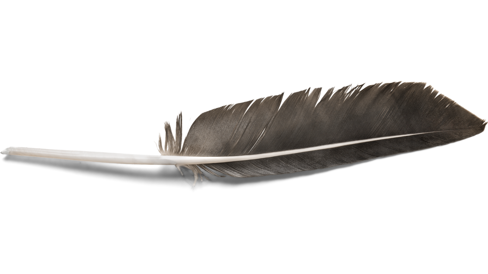
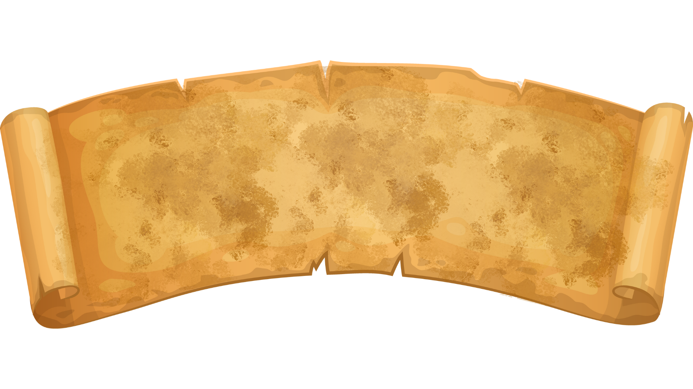
In the Nobleman's Eye
Antonio Pigafetta's Account of the First Mass in the Philippines
The First Map of the Strait of Magellan of 1520
The first circumnavigation of the globe was the voyage of 1519--22 by the Portuguese navigator Ferdinand Magellan (1480--1521),
undertaken in the service of Spain. The only known first-hand account of the voyage is the journal by Venetian nobleman and
scholar Antonio Pigafetta (circa 1480--1534). Four manuscript versions of Pigafetta's journal survive, three in French and one in Italian.
Pigafetta also made 23 beautiful, hand-drawn color maps, a complete set of which accompanies each of the manuscripts.
Shown here is Pigafetta's map of the Strait of Magellan, as reproduced in Carlo Amoretti's 1800 edition of the only Pigafetta manuscript in Italian.
Amoretti (1741--1816) was an Italian priest, writer, scholar, and scientist, who, as a conservator at the Biblioteca Ambrosiana in Milan,
discovered the manuscript, which was long thought to be lost. Amoretti published the Italian text with notes in 1800, and a French
translation the following year. The map depicts the southern part of South America, including the Strait of Magellan, discovered on the voyage.
Pigafetta’s map depicted the Strait of Magellan—an essential, yet treacherous sea passage discovered during the first circumnavigation of the globe.
Although dangerous, it became a crucial route linking the Atlantic and Pacific Oceans before the Panama Canal existed.
The First Mass in the Philippines
The first recorded Catholic Mass in the Philippines took place on March 31, 1521, Easter Sunday, on the island identified by Antonio Pigafetta
as "Mazaua." Pigafetta, the chronicler of Ferdinand Magellan’s expedition, documented this historic event in his journal.
According to his account, the Mass was officiated by Father Pedro de Valderrama and attended by
Magellan, his crew, and local chieftains Rajah Kolambu and Rajah Siaiu.
The location of Mazaua has been a subject of historical debate. While some historians previously believed that the
first Mass was held in Butuan, later studies confirmed that Limasawa in Southern Leyte was the actual site.
A monograph by Fr. Miguel Bernad in 1981 corrected the misconception, aligning with William Henry Scott’s 1982 study,
which further established Limasawa as the true location. The National Historical Commission of the Philippines (NHCP)
has officially recognized Limasawa as the site of the first Mass.
Early accounts—mainly by friars relying on available writings and on tradition—reported the First Mass as being held in Butuan,
Agusan del Norte, specifically on an island called Masao. The 1734 Murillo-Velarde map, for example, indicates the first
land sighting as Surigao from where the expedition headed north to Dinagat and Limasawa, then south to Butuan,
back north to Limasawa, from where they sailed along the west coast of Leyte, the Camotes Islands, and down to Sugbo and Mactan.
In 1872, a marker was raised in Agusan, at the place where the First Mass was then believed to have been held.
With changes in place names and in the course of the Agusan River, the marker’s location is now in the town of Magallanes, across the river from Butuan City.
The National Historical Commission of the Philippines (NHCP) has adopted the recommendation of a panel of experts
confirming that the 1521 Easter Sunday Mass took place in Limasawa, not in Butuan, as some historians had previously suggested.
Battle of Mactan
The Diorama of the Battle of Mactan is a project to illustrate the real events of the battle in the educational format of
what happened between the forces of Magellan and Lapu-Lapu on April 27, 1521. Both antagonists in this 16th-century
drama have been long misunderstood by our fellow countrymen because of the long-standing biases, sometimes
disinterest in historical narratives and mostly from lack of true, historically accurate books on this subject until
the publication of the book entitled “Ferdinand Magellan. The Armada de Maluco and the European Discovery of the Philippines.”
This book, published in 2016, by Dr. Danilo Madrid Gerona, is the most comprehensive narrative of the historical saga of
Magellan that is based on primary sources found in Spain and Portugal.
Dr. Gerona has written a special narrative for Sulu Garden Foundation that describes the events of that momentous
day on April 21, 1521 during the Battle of Mactan.
During this day was the battle in which Magellan’s Conquistadores and Magellan’s Allies (Rajah Humabon and Rajah Zula)
fought Rajah Lapu Lapu and his Mactan Allies. Because there was no written account of the battle from the point of
view of Rajah Lapu Lapu's warriors, this narrative is mostly based on the records by Antonio Pigafetta,
an Italian adventurer and chronicler, who joined Magellan’s expedition.
The Battle of Mactan on April 27, 1521, was the first major resistance by Filipinos against foreign colonizers.
Datu Lapulapu and his warriors successfully fought against the Spanish forces led by Ferdinand Magellan,
who had superior weapons.